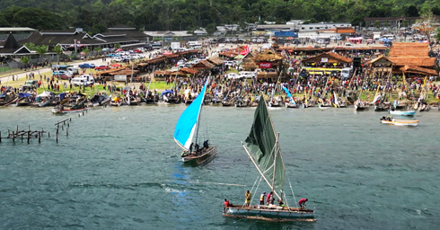
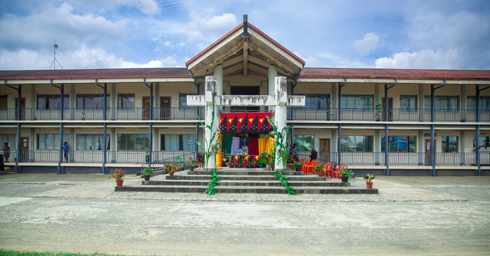
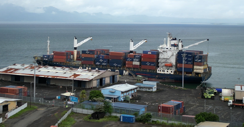

Provincial Profile
Milne Bay is a maritime province with a population of over 276,000 people. The province has significant economic potential in agriculture, tourism, and fisheries.
Geography & Demographics
Maps, population data, and key statistics.
Administrative Divisions
Districts, LLGs, and governance structure.
Comparative Economic Advantage
Economic potential in **oil palm, fisheries, tourism, and forestry**
Contact & Feedback

Email: milnbayprovgov@outlook.com | Phone: +675 7273 9000 | Address: Milne Bay Provincial Government, Alotau, Papua New Guinea.